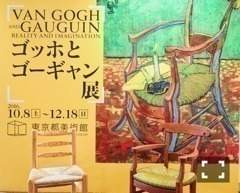

| 2016/10 21 Fri | 芸術の。 |
ちはるーむへようこそ！
まずは鳥取の方、
地震に遭われた方、
大丈夫でしょうか。。
とても心配です。
余震も続いているみたいで、
どうか被害が大きくなりませんように。
皆さんの無事を祈っています。
みんな空の下。
支え合う時。
-------------------------♡
今日は、芸術の秋なのでそれにあやかりまして
行ってきました！
「ゴッホとゴーギャン展」

いつもは1人で行くのですが
今日は珍しく母と一緒に。
2人の画家の作品を同時に見れることによって
作風の違いや、それぞれの良さが
引き立ってとても分かりやすかったです！
そして行ったことにより、
私はゴッホ派、母はゴーギャン派という
ことが判明しました。笑
私はゴッホの、目に見える現実世界を
忠実に、重ね塗りで立体感を出した画風が好き。
母はゴーギャンの、自らの空想の中で
自分の思うままの世界を優しいタッチで
描いているのが好きだと言っていました。
自分がどんな絵が好きか、
どんな絵を見て綺麗と思うか、
と気付けるだけでも
絵を見に行く価値はあるのかなと感じました。
今まで絵を見に行こう！なんて
思わなかった自分がいましたが
色々なものに触れて、
色々なものを感じて、
自分の幅を広げたい！と感じたので
今回行ってきました。
今日見たゴッホの作品の中で
私の一番のお気に入りだったのは
『グラスに生けた花咲くアーモンドの小枝』
なんとこの作品は日本に憧れていたゴッホが
浮世絵を意識して描いたそうです。
あのゴッホが日本を好きだったなんて
考えただけでもワクワクします。
時空を超えて繋がっている感覚。
この絵が好きすぎて
この作品をモチーフにしたグッズも
購入してしまいました。
手鏡。可愛い(﹡ˆ ˆ﹡)
有名な画家の作品は
中々機会が無いと見られないので
タイミングが合えば見に行った方がいいな！
と改めて感じたので、
これからも行ける時は積極的に行こうと決めました。
芸術の秋満喫だな〜
-------------------------♡
♬ ChihaMusic
「蝶々結び」Aimerさん
声がとても綺麗で繊細で
そして頭に残って離れない。
なんて頭にすぅっと入ってくる
心地のいい声なんだろう。
歌詞はRADWIMPSの洋次郎さん。
やはり深くて素敵な歌詞。
一見蝶々結びの作り方だけど
その裏には色々な意味が隠れてる。
"夢はここに 思い出は遠くに
気付けばそこにあるくらいがいい"
切なくて儚くて美しい歌詞。

「なんかシンメみたい！！」と
2人で喜んだ写真。
髪型とか顔の角度とか表情とかが
似てるね〜って( ◦˙ ˙◦ )
おやすみ！
斎藤ちはる
コメント(242)
2016/10/21 23:58